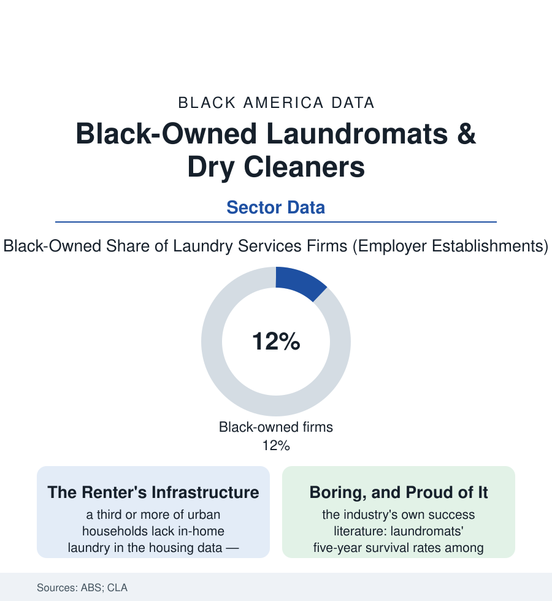

Black Business
The Laundromat: The Quiet Cash Business at the Corner
The neighborhood laundromat is small business in its oldest American form — coin by coin, generation by generation — and Black owners hold a working share of it. The laundry file.

On the corner of a thousand Black neighborhoods stands a business that has quietly paid mortgages, tuitions, and retirements for three generations: the laundromat. It makes no one's list of glamorous industries, and its economics explain why its owners don't care — the laundry file is the business section's study in the durable, the cash-based, and the unglamorous as a strategy. This article reads it.
The Economics of the Wash
The ownership has a labor genealogy the industry histories honor: laundry was Black women's work before it was Black business — the washerwomen of the post-emancipation South, whose Atlanta strike of 1881 (three thousand laundresses organized in a Washing Society, demanding standard rates a generation after slavery) stands in the labor canon as one of the first great organizing victories of Black working women — and the commercial laundry and pressing-shop trades of the Jim Crow city, where the skill met the storefront. The modern owner at the folding table descends, in a line the data can almost trace, from the women who once took the same bundles in over a back fence and set the price by organizing. The machines changed. The principle — the wash is essential, and essentials are leverage — is the strike's own, still paying out.
The industry's fundamentals are the association surveys' steady recital: the demand is the renter map (the housing data's third-of-households without in-unit machines — a captive, weekly, non-deferrable need, recession-resistant in the trade's lore and its revenue series alike), the revenue is granular and immediate (quarters become card swipes become app credits across the decades, the till filling in the smallest denominations in American commerce), the labor is thin (an attendant or two, the owner's evenings, the repairman's number on the wall), and the assets are the building as often as the business (the laundry file's recurring biography: the operator who bought the corner parcel with the machines, the real estate appreciating beneath the washers until the land outearned the laundry — the classic two-asset small business of the urban century). Survival is the sector's statistical signature: the Coin Laundry Association's surveys have long reported five-year survival rates near the top of the small-business tables — the laundromat outliving the restaurant, the boutique, and the startup in cohort after cohort of the data, its failures legible (the lease lost, the utility rates, the machines aged past their parts) and its successes compounding quietly into the multi-store local groups the industry calls, without embarrassment, empires of twelve. Black ownership sits inside this structure with the access file's usual shape — the survey's share respectable by small-business standards, the capital barrier the equipment loan's terms, the SBA's laundry lending a known category — and with the neighborhood's knowledge as the local moat: the owner who knows which machines the big families need on Sundays runs a better store than the absentee's spreadsheet.
The Service Layer and the New Models
The modern file adds the industry's second act: the wash-and-fold and commercial accounts (the household's weekly bundle priced by the pound — the two-income era's laundry outsourcing, its margins the sector's growth rows; the salon, gym, clinic, and restaurant linen contracts of the business-to-business shelf, the senior-care and salon files' back rooms supplied by the same machines); the café-laundromat and literacy-corner hybrids (the library partnerships putting books and reading corners in the laundromats of the early-childhood file — the wait monetized as literacy time, the foundation grants following the foot traffic no library branch could buy); and the pickup-and-delivery apps' two-sided arrival (the gig platforms offering the storefront's service without the storefront — the owners' association literature debating them as channel and as threat in the same issue, the smart owners wholesaling their machines' idle Tuesday hours to the apps while keeping their Sunday regulars). The dry-cleaning side of the shingle carries the file's cautionary rows: the solvent era's environmental liabilities in the regulatory data (the perc cleanup funds, the ground under the old cleaners a line item in the property file — the past's chemistry billed to the present's owners), and the green-cleaning conversion as the segment's capital race. Through it all the corner store's social function persists in the neighborhood data the sociologists collect: the laundromat as the block's heated, lit, always-open commons — the third place with folding tables, its bulletin board the analog internet of the streets around it.
Reading the Laundry Data
The business section contains unicorns and centenarians; the laundromat is the tortoise exhibit — an industry whose returns were never a secret, only unglamorous, accumulating in quarters for whoever could buy the machines and keep the corner. The association counts the stores. The neighborhoods count on them, weekly, which is the more reliable census.
More in Black Business
Black-Owned Businesses: Counts, Receipts, and the Representation Gap
About 161,000 Black-owned employer firms and three million solo ventures: how the Census Bureau counts Black business ownership, where firms concentrate, and the gap between population share and business share.
Black Median Net Worth: The Wealth Gap in Federal Reserve Data
The Federal Reserve puts Black median family net worth at $44,900, against $285,000 for White families — about 16 cents on the dollar. The widest gap in economic data.
Black Buying Power: The $1.8 Trillion Consumer Economy
Black buying power is estimated at about $1.8 trillion — larger than the economy of most nations. What the figure measures, who produces it, and what it buys.
Source: U.S. Census Bureau Annual Business Survey; Coin Laundry Association industry surveys; U.S. Census Bureau renter and housing data.